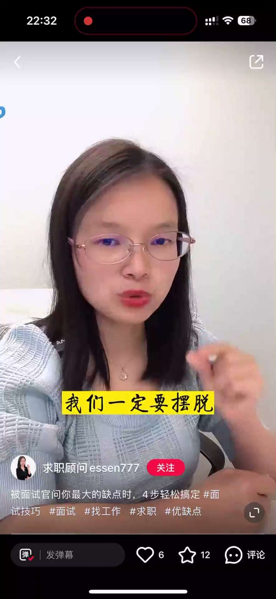
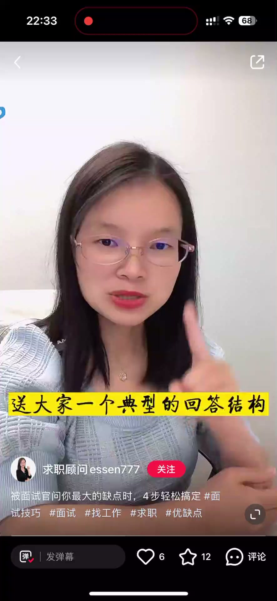
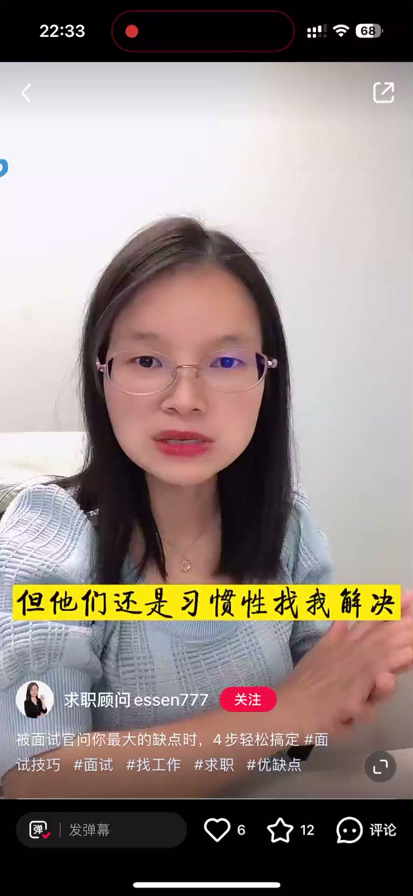

内容要点
被面试官问到「你最大的缺点是什么」，你还在回答「过于追求完美」吗？看似滴水不漏，其实面试官很反感——他觉得你在耍小聪明、不够真诚。这个问题的本质不是真的想知道你的缺点，而是想看你对自己有没有清晰的客观认识，以及你能不能有效控制它。视频给出一套万能回答结构：讲缺点、讲场景、讲控制，并用运营岗的「不太会拒绝人」做了完整示范。
知识结构
看似滴水不漏，实则面试官认为你在耍小聪明、不够真诚；这是面试陷阱题，但别回避。
面试官想看你对自己有没有清晰客观的认识，以及能否有效控制缺点；典型结构：讲缺点、讲场景、讲控制。
用「不会拒绝人」举例：用户习惯性找我，影响主业投入；转思路与售后协同、交接客户，关注进度但仍满意——缺点真实、场景具体、控制有效。
「最大缺点」不是陷阱而是展示题：讲真实缺点+具体场景+有效控制，只要缺点不是岗位硬伤就如实回答——面试官要的是自我认知的清晰度。
00:00-00:30「过于追求完美」是雷区
被面试官问到你最大的缺点是什么，你还是在说「我最大缺点是过于追求完美」吗？拿我做面试辅导的学员里头，有不少同学碰到这个问题都是这样回答。
看似滴水不漏，其实面试官挺反感的：他会认为你在耍小聪明，不够真诚。大家都知道问缺点是一个面试陷阱题，但是如果真的讲缺点的话，面试官可能觉得你自己哪里哪里不太行。

00:31-01:00问题的本质与回答结构
事实上我们一定要摆脱自己完美主义的这个包袱，因为面试官问这个问题啊，他其实并不是真的好奇你的最大缺点到底是什么，而是想看看你对自己有没有一个很清晰的客观认识，以及围绕这个缺点，你能不能很好地有效控制。
只要说你的缺点不是应聘岗位上的明显硬伤，如实回答就好了。送大家一个典型的回答结构：讲缺点、讲场景、讲控制。

01:01-01:41运营岗示范：不太会拒绝人
举个例子，比如我应聘运营岗，我就可以这么说：自己最大的缺点是不太会拒绝人。我日常的主要工作是在做用户的引流跟转化，所对接的这些用户在成为我们正式客户之后，如果在产品使用上碰到什么问题，可能是出于对我的信任吧，虽然说有专门的售后团队，但他们还是习惯性找我解决。
刚开始我也不好拒绝，一有问题都亲力亲为，逐个帮他们解答。后来发现这样确实牵扯了我不少精力，影响我主要工作的投入。我就开始转变思路：主动找售后的同学加强沟通，彼此加深对客户画像跟客户需求的理解。客户再有问题的时候，我会第一时间把它移交给售后的同学，同时让客户知道会有更专业的同学来服务他。
虽然现在我仍然会抽出一点点精力去关注问题的解决进度，但相比之前已经好了很多，而且客户对我们的专业服务也很满意。

完整转录（44段）
以下文本由 Whisper medium 模型自动转录，可能存在少量识别误差，已尽可能修正。
被面试官问到你最大的缺点是什么
你还是在说我最大缺点是过于追求完美吗
拿着我做面试辅导的学员里头啊
有不少同学碰到这个问题都是这样回答
看似滴水不漏啊
其实面试官挺烦干的
他会认为你在耍小聪明不够真诚
大家都知道问缺点是一个面试陷阱题
但是如果真的讲缺点的话
面试官可能觉得你自己哪里哪里不太行
但事实上我们一定要摆脱自己完美主义的这个包袱
因为面试官问这个问题啊
他其实并不是真的好好奇你的最大缺点到底是什么
而是想看看你对自己有没有一个很清晰的客观的认识
以及围绕这个缺点你能不能很好地有效控制
只要说你的缺点不是应聘岗上面的明显硬伤
如实回答就好了
送大家一个典型的回答结构
讲缺点讲场景讲控制
举个例子啊
比如我应聘运营岗
哎我就可以这么说
自己最大的缺点是不太会拒绝人
我日常的主要工作是在做用户的引流跟转化
所对接的这些用户在成为我们正式客户之后
如果在产品使用上碰到什么问题
可能是出于对我的信任吧
虽然说有专门的售后团队
但他们还是习惯性找我解决
刚开始我也不好拒绝
一有问题都亲力亲为
逐个帮他们解答
后来发现这样的确实牵扯了我不少精力
影响我主要工作的投入
我就开始转变思路
主动找售后的同学加强沟通
彼此加深对客户画像跟客户需求的理解
客户再有问题的时候
我会第一时间把它移交给售后的同学
同时让客户知道会有更专业同学来服务他
虽然现在我仍然会抽出一点点精力
去关注问题的解决进度
但相比之前已经好了很多
而且客户对我们的专业服务也很满意